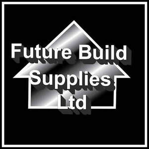

Trade Mark Journal No.2025/034 22 August 2025
UK00004225068 26 June 2025 (1,6,11,17,19,35,37)

- Class 1
- Adhesives for industrial purposes; chemical preparations for sealing joints; cement-waterproofing chemicals (except paints); concrete preservatives (chemical); concrete-aerating chemicals; concrete additives; hardeners for concrete; chemical substances for insulating buildings; anti-corrosive chemicals (not paints); waterproofing chemical compositions; retarders for concrete and mortar; chemical substances for use in building materials; soil stabilising compositions; surface active chemical agents for use in construction; desiccants for industrial use; fireproofing preparations (excluding paints); chemicals for the manufacture of coatings; unprocessed plastics in the form of powders, liquids or pastes; chemical additives for mortar; chemical compositions for dust suppression; salts for industrial purposes; oil cement (putty for sealing pipes); anti-freeze preparations for industrial use; epoxy resins (unprocessed); chemical bonding agents for construction; primers (chemicals, not paints); etching agents for concrete; degreasing preparations for industrial use; .
- Class 6
- Metallic building and construction materials; drainage apparatus of metal; drain channels of metal; trench drains of metal; drain end caps of metal; drain mats of metal; drain grates of metal; drain bases of metal; leaf guard covers of metal for drain pipes; gutter covers of metal; troughs of metal; silt boxes of metal; collection boxes of metal; drain pipe attachments of metal, namely end outlets, corners and tees; covers of metal for use in drainage channels; drain covers of metal; drain gullies of metal; drains of metal; access covers and frames of metal; surface access covers and frames of metal; manhole assemblies of metal; manhole covers and frames of metal; gully gratings of metal; steel; stainless steel; galvanized steel sheets and plates; metal sewer grilles; metal gratings; steel grating; handrails of metal; steps [ladders] of metal; metal step irons; safety chains of metal; steel chains; parts and fittings for all of the aforesaid goods; Metal valves for use in heating and plumbing installations; radiator valves of metal; lockshield valves of metal; parts and fittings for the aforesaid goods. .
- Class 11
- Installations and apparatus, all for handling water, waste water, flood water and storm water; cisterns for holding/storing and attenuating water, waste water, flood water or storm water; water, waste water, flood water and storm water distribution installations; water, waste water, flood water and storm water drainage installations; water, waste water, flood water and storm water filtering apparatus and installations; storm water and flood water attenuation installations; urban water, waste water, flood water and storm water drainage systems and installations; water collection chambers; storm and flood water collection chambers; sustainable urban water, waste water, flood water and storm water drainage systems; cisterns and tanks for holding/storing water, waste water, flood water or storm water; glass reinforced plastic tanks for holding/storing water, waste water, flood water or storm water; parts and fittings for all the aforesaid goods.
- Class 17
- Adhesive tapes for building and construction; self‑adhesive tapes; scrim tape; caulking materials and putty; sealant compounds; gaskets, joint packings, O‑rings, oil seals; flexible non-metal hoses and tubes (including irrigation, radiator, textile, hydraulic hoses) and non-metal fittings and junctions; insulating materials (paper, felt, fabrics, varnish, plaster, refractory materials), mineral wool, glass wool and fibres, acoustic baffles; rubber and plastic padding, stuffing materials, sleeves, stoppers, buffers, non-slip pads, door-stop rubbers, dock bumpers; semi‑processed acrylic and plastic resins and foils; chemical compositions for sealing leaks and boiler use; dielectrics and insulating oils; non-conducting heat-retention materials; Flexible rubber couplings; adapter couplings made of rubber; non-metallic flexible pipe couplings; rubber expansion joints; flexible non-metallic hose couplings.
- Class 19
- Drainage apparatus; drainage apparatus for collecting storm and/or rainwater for channelling, collection or recycling; drain channels; trench drains; drain end caps; drain mats; drain grates; drain bases; leaf guard covers for drain pipes; gutter covers; troughs; silt boxes; collection boxes; drain pipe attachments, namely end outlets, corners and tees; non-metallic construction materials for use in drainage systems; plastic building materials; large diameter plastic pipes; non-metallic articles for drainage purposes; non-metallic drainage installations; non-metallic pipes for the storage, attenuation and filtration of storm water; non-metallic inspection chambers; non-metallic manhole covers; non-metallic modular crates for underground drainage; non-metallic geocellular units for water management; non-metallic soakaway systems; non-metallic tanks for stormwater attenuation; lawn edging not of metal; parts and fittings for all the aforesaid goods; Sawn timber; planed timber; treated wood for construction; wood for building; wooden beams and posts; sleepers not of metal. .
- Class 35
- The bringing together, for the benefit of others, of a variety of goods, enabling customers to conveniently view and purchase those goods from an internet website; an intranet website; any other computer network; a virtual retail or wholesale store or outlet; a physical retail or wholesale store or outlet; through a television shopping channel; by mail order; or by means of telecommunications; said goods comprising: metallic building and construction materials; drainage apparatus of metal; drain channels of metal; drain covers of metal; drain gullies of metal; drain gratings of metal; manhole assemblies of metal; manhole covers and frames of metal; access covers and frames of metal; surface access covers and frames of metal; steel; stainless steel; galvanized steel sheets and plates; metal sewer grilles; metal pipes; steel pipes; metal gratings; steel grating; handrails of metal; steps [ladders] of metal; metal step irons; safety chains of metal; steel chains; non-metallic building and construction materials; non-metallic road building materials; plastic building materials; drainage apparatus not of metal; drain channels not of metal; drain covers not of metal; drain gullies not of metal; drain gratings not of metal; manhole assemblies not of metal; manhole covers and frames not of metal; access covers and frames not of metal; surface access covers and frames not of metal; non-metallic pipes; geosynthetic materials; geotextiles; mesh for construction purposes; mats for construction purposes; composite materials for construction purposes; membranes for construction purposes; impermeable membranes for construction purposes; mesh for use in civil engineering; mats for use in civil engineering; composite materials for use in civil engineering; membranes for use in civil engineering; impermeable membranes for use in civil engineering; mats and membranes for ground reinforcement; land drainage; soil protection; erosion control; ground and soil protection; ground drainage containment; membranes used to control ground fluid movements; impermeable membranes for the foregoing purposes; non-woven geotextiles; woven geotextiles; fabrics for use in civil engineering; non-woven and woven fabrics for land stabilisation; soil stabilisation; land drainage; land protection; soil protection; soil drainage; erosion control sheeting or fabric for construction use; erosion control fabrics; stabilisation fabrics for use in construction; reinforcing mesh made of textile fibres for construction purposes; parts and fittings for all of the aforesaid goods. .
- Class 37
- Building construction; construction services; construction of civil engineering infrastructures; contract building and construction services; civil engineering construction; construction of civil engineering works; civil infrastructure construction; civil construction services; installation, repair and maintenance of building constructions and civil engineering infrastructures; installation, repair and maintenance of drainage apparatus; covers for use in drainage channels; drain channels; drain covers; drain gullies; drains; access covers and frames; surface access covers and frames; manhole assemblies; manhole covers and frames; gully gratings; gratings; sewer grilles; safety chains; handrails; installation, repair and maintenance of geosynthetic materials; geotextiles; mesh for construction purposes; mats for construction purposes; composite materials for construction purposes; membranes for construction purposes; impermeable membranes for construction purposes; paving; mesh for use in civil engineering; mats for use in civil engineering; composite materials for use in civil engineering; membranes for use in civil engineering; impermeable membranes for use in civil engineering; materials for ground reinforcement; land drainage; soil protection; erosion control; ground and soil protection; ground drainage containment; materials used to control ground fluid movements; non-woven geotextiles; woven geotextiles; fabrics for use in civil engineering; non-woven fabrics for land stabilisation; soil stabilisation; land drainage; land protection; soil protection; soil drainage; erosion control sheeting for construction use; erosion control fabric; mats and sheeting, not of metal, being geotextiles; stabilisation fabrics for use in construction; reinforcing mesh made of textile fibres for construction purposes; parts and fittings for all of the aforesaid goods; advisory services relating to the aforesaid; information services relating to the aforesaid; consultancy services relating to the aforesaid.
Future Build Supplies Ltd